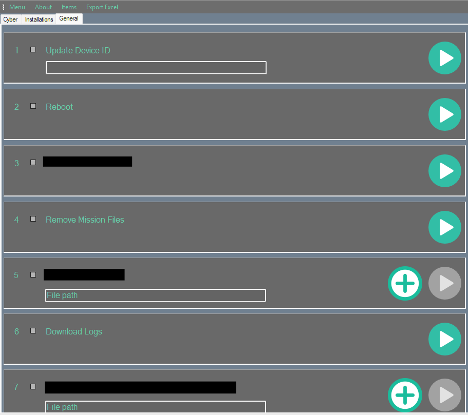

Every remote operation on our hardware meant the same manual ritual: SSH in by hand, transfer a file, run a command, read raw terminal output to guess whether it worked. I built a Windows desktop tool that carries an engineer across that gap in one click — SSH and file transfer under the hood, a plain-English result on screen, and every operation defined in config, not code, so adding a new one never means touching the app itself.
Built during the same release-engineering work covered in the Rafael Case Study →

Every device operation — rebooting a unit, pulling its logs, changing an identifier — meant opening a terminal, SSH-ing in by hand, running the right command in the right order, and reading raw shell output to work out whether it actually succeeded. That was fine for the person who wrote the scripts. It was much less fine for everyone else on the team who just needed the operation done, didn't want to memorize SSH syntax, and had no easy way to tell a real failure from a scary-looking but harmless warning.
File transfer had the same friction in both directions — pulling logs off a unit or pushing a file onto one meant a manual pscp command every time, typed correctly, from the right folder, with the right arguments.
The app itself has almost no hardcoded behavior. Three small config files define everything the UI shows and does — which is what let this grow from a handful of operations to dozens without ever touching the C# behind it.
<SerializeTabData>
<tabPageindex>0</tabPageindex>
<tabPageTitle>Cyber</tabPageTitle>
</SerializeTabData>
<SerializeTabData>
<tabPageindex>1</tabPageindex>
<tabPageTitle>Installations</tabPageTitle>
</SerializeTabData>
<SerializeTabData>
<tabPageindex>2</tabPageindex>
<tabPageTitle>General</tabPageTitle>
</SerializeTabData>Each row within a tab is its own entry in Runner.xml — an ID, which tab it belongs to, a label, and one field that matters more than any other: eRunControlType. That single value decides what the row looks like on screen.
<SerializeUCData>
<eRunControlType>Parameter</eRunControlType>
<id>1</id><tabPage>2</tabPage>
<description>Update Device ID</description>
</SerializeUCData>
<SerializeUCData>
<eRunControlType>None</eRunControlType>
<id>2</id><tabPage>2</tabPage>
<description>Reboot</description>
</SerializeUCData>
<SerializeUCData>
<eRunControlType>None</eRunControlType>
<id>4</id><tabPage>2</tabPage>
<description>Remove Mission Files</description>
</SerializeUCData>
<SerializeUCData>
<eRunControlType>None</eRunControlType>
<id>6</id><tabPage>2</tabPage>
<description>Download Logs</description>
</SerializeUCData>Just a play button — the operation needs no extra input. Reboot, Download Logs.
Renders a text field next to the button. Update Device ID takes the new ID this way.
Renders a file-path field with a picker — for operations that need a file uploaded first.
The last piece closes the loop: every script exits with a specific code, and a separate registry maps that code to a plain-English message and a severity — success or error — completely decoupled from the script itself.
<SerializeMessageData>
<id>98</id>
<description>no ping to the BNET</description>
<eSevirity>Error</eSevirity>
</SerializeMessageData>
<SerializeMessageData>
<id>94</id>
<description>ERROR pscp/plink to BNET</description>
<eSevirity>Error</eSevirity>
</SerializeMessageData>
<SerializeMessageData>
<id>1</id>
<description>keys successfully updated</description>
<eSevirity>Success</eSevirity>
</SerializeMessageData>Tabs.xml, the General-tab rows shown, and the Messages.xml entries above are the real config — nothing invented here. Rows belonging to the other two tabs are left out by choice; that's covered in §03.
The tabs split operations by category rather than by how they work under the hood — every row, regardless of tab, follows the exact same config → control-type → script → message pipeline described above. I'm showing the actual screens below; specific operation labels inside Cyber and Installations are blacked out at my choice, since several relate to security-domain key handling and firmware internals I'd rather not detail publicly. The pattern that runs all of them is identical either way.
Key and security-module management — the kind of operation where a wrong step is expensive, so the UI keeps it to a checkbox and a single confirm rather than a typed command.
The longest tab — every install and upgrade path a unit might need, each one a file-browse-and-run row instead of a remembered sequence of transfer-then-execute commands.
Every button follows the same shape: confirm the device is actually reachable before doing anything, run the operation over SSH, and turn whatever exit code comes back into the right entry from the message registry above. Here's that shape, genericized — the real scripts hardcode a specific default credential inline, which I've replaced with a placeholder rather than show the actual value.
set DEVICE_IP=%1
ping -n 1 %DEVICE_IP% | find "TTL" >nul
IF errorlevel==1 (
echo No ping to %DEVICE_IP%
exit 98
)
plink.exe -P 22 -l %DEVICE_USER% -pw %DEVICE_PASS% %DEVICE_USER%@%DEVICE_IP% ^
"echo %DEVICE_PASS% | sudo -S /home/device/scripts/operation.sh"
if errorlevel 1 (
echo ###operation failed### 1>&2
exit 10
) else (
echo ###operation completed successfully###
exit 9
)File retrieval follows the same gate, just with a transfer instead of a command — pull the file over pscp, then stamp it with the device ID and a timestamp so ten downloads from ten units never collide in one folder.
set /p deviceId="Enter ID: "
pscp -pw %DEVICE_PASS% %DEVICE_USER%@%DEVICE_IP%:%REMOTE_PATH% .\
set stamp=%date:~10,4%%date:~4,2%%date:~7,2%-%time:~0,2%%time:~3,2%
ren download.tar.gz "%deviceId%_%stamp%_download.tar.gz"
echo Saved as %deviceId%_%stamp%_download.tar.gzReconstructed as a generic example — the real credential value, device paths, and specific operation called have been replaced with placeholders. The ping-gate → remote-action → exit-code → rename-with-timestamp logic matches what I built.